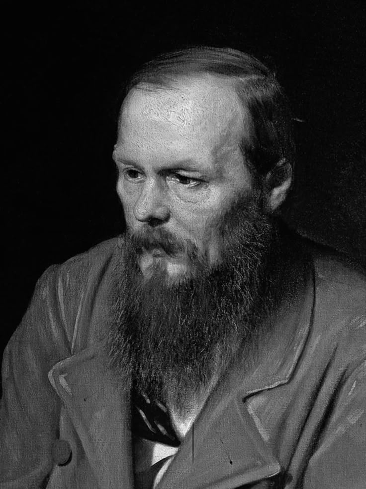

Fiódor Dostoyevski (1821-1881)
Fiódor Dostoievski fue un novelista ruso del siglo XIX, considerado uno de los más grandes pensadores de la literatura universal. Nació en 1821 en Moscú y a lo largo de su vida enfrentó numerosas dificultades, como la pobreza, la prisión y la enfermedad, experiencias que marcaron profundamente su visión del mundo y su obra. Estas vivencias lo llevaron a reflexionar sobre la condición humana, el sufrimiento y la búsqueda de sentido en medio de la adversidad.
Su pensamiento se caracteriza por un profundo análisis psicológico de los personajes y una mirada crítica hacia la sociedad.Dostoievski no se conformaba con aceptar las normas establecidas; en cambio, exploraba los conflictos morales y espirituales del ser humano, poniendo en duda las certezas del progreso, la razón y la moral tradicional. Sus obras muestran cómo las decisiones personales pueden revelar la complejidad del alma humana y sus contradicciones internas.
En novelas como Crimen y castigo y Los hermanos Karamázov, Dostoievski plantea preguntas sobre la libertad, la justicia y la fe, que siguen siendo relevantes en la actualidad.Sus personajes se enfrentan constantemente a dilemas éticos que los obligan a pensar por sí mismos, a cuestionar sus creencias y a asumir las consecuencias de sus actos. De esta manera, el autor fomenta el desarrollo del pensamiento crítico y la reflexión moral.
A través de su literatura, Dostoievski invita a mirar más allá de las apariencias y a comprender la profundidad del alma humana. Su legado no solo radica en su talento narrativo, sino en su capacidad de hacer que los lectores se enfrenten a sus propias convicciones y valores. Por eso, su pensamiento sigue siendo una fuente esencial para el análisis crítico y filosófico del ser humano.